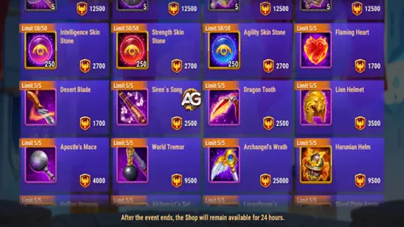
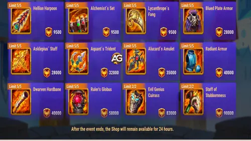

Champion's Gallery Shop Guide for Hero Wars Alliance
- By: Alexandre Domingos. .
The Champion's Gallery shop from the Ascendant Glory event is one of those shops where the correct choice depends heavily on your account. This season puts Guus in the spotlight, and that matters because he is not just the event face. He also received the new Twilight Skin+, which makes this shop feel more important than a normal resource exchange.
My honest view is this: do not spend Ascension Crests emotionally. Guus is exciting, the Skin+ is tempting, and the Relic Shards are rare. That is exactly why you need a clear priority before touching the shop. A beginner and an advanced player should not spend the same way here.

The Short Version
If you do not have Guus, his Soul Stones are the first priority. If you already have Guus and your account is more developed, the best value moves toward Relic Shards, especially Lian, Oya, and Jhu depending on your teams. The Twilight Skin+ is very strong, but only becomes a must-buy if Guus is part of your real main team.
First Priority for Beginners: Guus Soul Stones
If you are a beginner and you do not have Guus, I would treat his Soul Stones as a maximum priority in this shop. Guus is not a hero you can comfortably farm from campaign missions, and you do not have a normal shop where you can slowly buy his Soul Stones every day.
That makes events like Ascendant Glory extremely important. Outside special events, Guus Soul Stones usually depend on limited opportunities or the Heroic Chest. And the Heroic Chest is not a plan. It is hope with a timer.
My recommendation is to aim for at least 4 evolution stars during the event. That is the practical target because it makes Guus much more usable and prepares him for relic progress. After that, you can use the Evolution Booster later to push him to 5 and 6 stars while saving a lot of Soul Stones and event currency.
This is the kind of decision that feels small today and pays you back later. If you miss Guus now, you may spend months waiting for another clean chance.
Second Priority: Guus Twilight Skin+
The second big question is the Twilight Skin+. Before deciding, read my full Guus guide to understand his skin priorities and why Critical Hit Chance changes how reliable his battle impact becomes.
Guus is a support hero built around healing, Golden Feathers, critical synergy, and team momentum. His Twilight Skin+ helps by giving him more Critical Hit Chance, making Honkageddon trigger more consistently. That means more healing around the target and more Golden Feather coverage during the battle.
This event also changed the Skin+ path in a dramatic way. Now you can get the base Twilight Skin for free by completing event missions and spending 90,000 Ascension Crests. After you own the base skin, the Skin+ becomes available. The problem is that the Skin+ is now around three times more expensive than before, so you must ask the real question: is Guus actually in your main team?
If Guus is not in your main team right now, and you are not planning to build around him soon, you can save those Ascension Crests for other shop priorities and wait. The base skin should become obtainable later with a Skin Certificate or 5,000 Skin Stones after a waiting period that can be up to 5 months.
But here is the danger in waiting too much: after the event, the Skin+ path becomes ugly. Guus's Twilight Skin+ can only return through the Heroic Chest after roughly 5 months, and even then it competes with many other Skin+ options. You need 400 Heroic Chests to invoke a random Skin+, and random does not mean Guus. With one free chest per day and one ad chest, that can take a very long time unless you spend heavily on Emeralds.
So my opinion is direct: if Guus is already a core part of your team, the Twilight Skin+ is painful but important. If he is just a collection hero for you, do not let the shop pressure you into spending like he is your main carry.
Best Priority for Intermediate and Advanced Players: Relic Shards
For intermediate and advanced players, I think the real heart of this shop is the Relic Shards. This Champion's Gallery lineup includes Relic Shards for Oya, Lian, Jhu, and Alvanor.
Each purchase costs 9,300 Ascension Crests and gives 2 Relic Shards. You can buy each hero's Relic Shards up to 10 times, which means a maximum of 20 Relic Shards per hero from this shop.
- Lian Relic Shards - my safest first priority: Lian is flexible, annoying in PvP, and useful in many teams even when she is not your highest-invested hero. The beauty of Lian is that she can work at low investment if you focus on Health and defenses. Her relic gives Health and Magic Attack at the same time, which fits her perfectly.
- Oya Relic Shards - my first priority if you are building around her: Oya is powerful, but she is not cheap. Unlike Lian, she usually needs serious investment to become the monster players fear. If your plan is to build an Oya team, then Oya can absolutely be your number one priority here.
- Jhu Relic Shards - my underrated pick: I know some players will criticize this, but I still believe Jhu deserves more respect. In Realm, Jhu is S+ tier against bosses and monsters when built correctly. My Jhu can destroy level 27 bosses with one hit, and I believe with a little more power he can start deleting level 30 bosses too. That saves troops, time, and stress.
- Alvanor Relic Shards - only for Nature plans: Alvanor is not bad, but he is not the same universal priority. If you are building Nature teams or fighting at high Royal League levels, he can shine. Outside that plan, these resources may be better spent on heroes with broader value.
Why I Defend Jhu More Than Most Players
Let me pause on Jhu because this is where some players disagree with me. In PvP, yes, Jhu has clear counters. Martha, Jorgen, Somna, and other control or sustain tools can make his life difficult. I am not pretending he is the perfect Arena hero.
But Hero Wars Alliance is not only Arena. In Realm, Hydra, and campaign-style boss fights, Jhu can give huge practical value. When one hero helps you kill bosses faster and lose fewer troops, that is not theory. That is account progress you feel every day.
So if you already use Jhu for Hydra, Frontier, Realm bosses, or boss-focused content, do not underestimate these shards. For some accounts, he may even be the best purchase in the shop.
After Relic Shards: Buy Skin Stones
After your Guus plan and Relic Shard priorities are handled, I would move to Skin Stones. We always need too many of them because every new skin creates another resource problem. Skin Stones are never exciting, but they are always useful.
This is especially true if you are buying or leveling Guus's Twilight Skin+. A Skin+ is only valuable when you can actually level it. Owning the skin and leaving it weak does not create the battle impact players imagine.


What I Would Avoid Buying
The rest of the shop is where I would be much more careful. Miu Soul Stones, Kendle Soul Stones, their artifact fragments, and hero equipment are not where I would rush first in this season's Champion's Gallery.
Miu and Kendle resources can matter if you are actively building them, but compared with Guus progress, rare Skin+ timing, and Relic Shards for heroes like Lian, Oya, or Jhu, they usually fall behind.
Equipment is the easiest skip for me. You can farm equipment by spending Energy, and while doing that you also gain gold, experience, and event mission progress. Buying gear with Ascension Crests feels like spending rare currency to avoid normal farming.
- Avoid equipment: farm it with Energy whenever possible.
- Be careful with Miu and Kendle Soul Stones: buy only if they are part of your real plan.
- Do not buy random artifacts just because they are there: focus on heroes you actually use.
- Do not chase the Twilight Skin+ blindly: buy it because Guus matters to your account, not because the shop creates pressure.
My Final Shop Order
| Priority | Item | My Opinion |
|---|---|---|
| 1 for beginners | Guus Soul Stones | Highest priority if you do not have Guus. Aim for at least 4 stars, then use the Evolution Booster later. |
| 1 for Guus mains | Twilight Skin+ path | Worth it if Guus is in your main team. Painful price, but much harder to target after the event. |
| 1 for advanced accounts | Lian Relic Shards | Flexible PvP value, strong even with low investment, and her relic stats fit her role well. |
| 2 | Oya Relic Shards | Excellent if you are building around Oya, but she needs higher investment than Lian. |
| 3 | Jhu Relic Shards | Underrated. Amazing for Realm bosses, Hydra, Frontier, and boss-focused progress. |
| 4 | Alvanor Relic Shards | Good for Nature teams and high-level Royal League plans, but not a universal priority. |
| 5 | Skin Stones | Always useful, especially if you are investing in Guus and his Twilight Skin+. |
| Last | Miu and Kendle resources | Only buy if those heroes are already part of your account plan. |
| Avoid | Equipment | Farm gear with Energy and gain gold, experience, and mission progress at the same time. |
My final take: this shop is very good if you respect your account stage. Beginners should secure Guus. Guus mains should seriously consider the Twilight Skin+. Advanced players should look hard at Relic Shards, with Lian, Oya, and Jhu being the most interesting targets. The worst mistake is spending Ascension Crests on things you can farm normally.
Useful Links for This Event
These guides can help you decide where your Ascension Crests should go:
Explore new skills with our featured guides!


Leave Your Opinion!
Did you like my Champion's Gallery Shop Guide? Would you spend first on Guus, the Twilight Skin+, Lian Relic Shards, Oya, or my underrated Jhu pick? Share your opinion in the comment section on Alexandre Games. Questions, suggestions, and different shop priorities are always welcome.
Click the button below to get started: